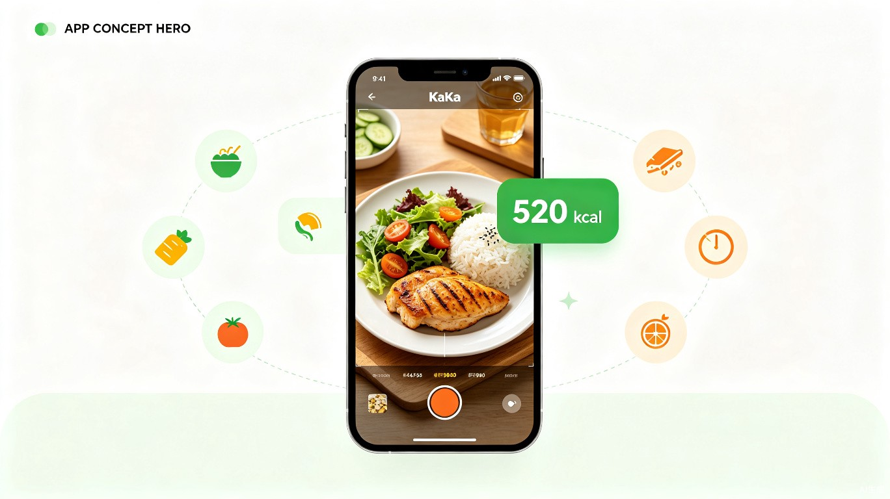

一拍知热量，吃得明白瘦得下来

减肥和健身的人每天都在和"这口到底多少卡"较劲。手动查食物热量又慢又烦，一顿饭要翻半天数据库还估不准份量；网上找的减肥食谱千篇一律，不考虑个人身高体重和运动量，照着吃也常常瘦不下来。用户要的是一个"拍了就知道、吃了就明白"的工具，让控制饮食不再靠毅力硬撑。
身边朋友健身时总在纠结"这碗饭多少卡"，拍照问我、我再去查，来回折腾。我自己也照着网红食谱吃过，越吃越胖——食谱根本不匹配我的运动量。后来想，要是拍照能直接识别食物并换算热量，再结合身体数据动态调整食谱，这事就简单多了。
一款手机 App，核心是用拍照识别食物热量，并根据用户身体数据和当天饮食，智能生成和调整每日食谱。
核心是 18-40 岁、有减脂或增肌需求的人群，包括健身爱好者、体重管理者和想养成健康饮食习惯的上班族、学生。其中"健身新手"和"管不住嘴的减肥党"是最高频使用者。
没有这个产品时，用户要么在薄荷健康、MyFitnessPal 里一个个搜食物、估份量，费时又容易放弃；要么照搬网上"通用减肥食谱"，但那些食谱不区分个人身高体重和运动量，照着吃常常瘦不下来或营养不良。结果就是：知道该控饮食，但坚持不下去。
薄荷健康回答"我吃了多少"，咔卡回答"我接下来该吃什么"。
现有产品本质是事后记录工具——你吃了饭，去 App 里搜食物、估份量、点确认，它告诉你"今天吃了 1850 卡"。整个过程的核心动作是"查"和"记"，记录本身是负担。它们的拍照识别只是辅助入口，识别完照样要确认份量、归类到早餐午餐，流程没变。
咔卡反过来，做的是事前决策工具——早上起来 App 直接告诉你"今天适合吃这些"，你拍了午餐它立刻算出"还剩 700 卡额度，晚餐建议这样吃"。不用建账、不用分类、不用翻数据库，相机就是唯一入口。核心动作从"记录"变成了"拍照听建议"。
一句话：别人让你当会计，咔卡让你当甩手掌柜。
拍照识别把"记录一顿饭的热量"从平均几分钟的手动查询压缩到几秒，让饮食记录这件最容易半途而废的事变得几乎无感。份量识别采用视觉模型智能估算，识别不准时弹出滑块让用户微调，比手输数字轻得多。记录不中断，控制饮食才有可能真正坚持下来。
健康饮食是持续增长的刚需市场。以拍照识别为入口，App 能积累用户的真实饮食偏好数据，后续可推荐健身课程、健康餐外卖、营养补剂等付费内容，也可对接体脂秤、运动手环等硬件，让"知道吃多少"自然延伸到"吃得更好"。
免费版解决"今天吃了多少"，会员版解决"接下来怎么吃才能瘦下来"。前者是工具，后者是结果——用户付钱买的不是功能，是"瘦下来"这件事的可能性。
| 对比项 | 免费版 | 会员版 |
|---|---|---|
| 拍照识别 | 每天 10 次 | 不限次 |
| 热量目标 | 按身高体重算出固定数 | 随当天饮食和运动实时调整 |
| 食谱推荐 | 每天 3 餐通用方案 | 跟着你变的活食谱 |
| 冰箱模式 | 每月 2 次 | 不限次 |
| 数据报告 | 仅当天数据 | 每周趋势报告 + 下周建议 |